Skyrim é um mundo vasto e repleto de lugares interessantes e diversos para explorar.Estes são apenas alguns dos principais lugares em Skyrim. O jogo está repleto de locais fascinantes, como masmorras, fortalezas, aldeias e muito mais, cada um com sua própria história e segredos a serem descobertos. A exploração desses lugares é uma parte essencial da jornada do jogador em Skyrim.

| CIDADES | LOCALIZAÇÃO NO MAPA | INFORMAÇÕES | IMAGENS |
|---|---|---|---|
| Whinterun | Localizada no centro de Skyrim | Uma cidade no centro de Skyrim e capital da região de Whiterun (Whiterun Hold). É um centro comercial de Skyrim. A jovem Barenziah, durante sua fuga, tomou abrigo lá por uma semana com seu jovem amante durante seu retorno a Mournhold. Esta região contém o feudo de Whiterun e High Hrothgar e foi uma vez referida como "A Cidade Imperial de Skyrim", antes de sofrer alguns atos de caos, incluindo uma contenda dinástica, ataques por bandidos Hörme e Frost Trolls, junto de uma série de invernos aniquiladores que alternavam inundações, secas e incêndios. Uma sacerdote auto-proclamada de Lorkhan, Jsashe, a Rainha Bruxa (Jsashe the Witch-Queen), controla o condado e a cova das bruxas locais. É interessante notar que a população local de gigantes aparenta usar a tundra como pasto | 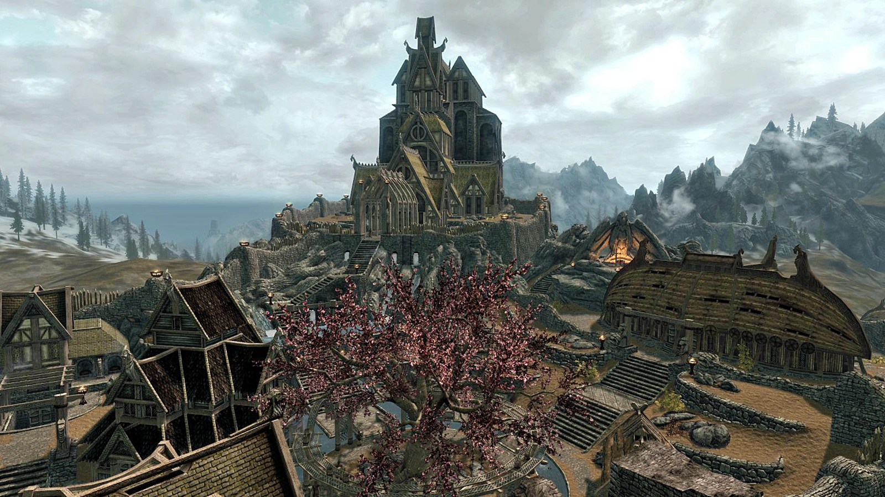 |
| Solitude | Situada na costa norte | Solitude é o centro da influência imperial dentro de Skyrim e capital da região de Haafingar. O Castelo Severo (Castle Dour) está localizado lá, de onde o General Tullius comanda a Legião Imperial (Imperial Legion). A realeza mora dentro do Palácio Azul (Blue Palace). Solitude está localizada ao norte da parte central do mapa. Lar do famoso Colégio dos Bardos (Bard's College), Haafingar é também um dos portos naturais e principais de Skyrim: navios acima e debaixo da costa podem ser encontrados lá em seus cais lotados, carregando madeira e bacalhau salgado para os mercados de Wayrest, Anvil e Senchal. Fundado durante o longo "flerte de Alessia" (vide: Alessian Empire), o Colégio dos Bardos continua a ostentar um feixe herético, e seus estudantes são famosos beberrões, apropriados o bastante para seu negócio escolhido. Estudantes anualmente invadem o comércio para uma semana de folia, o clima do qual é a queima do "Rei Olaf" (King Olaf), sob forma de efígie, possivelmente um "agora esquecido" contendedor na Guerra de Sucessão (War of Succession). Graduandos não encontram problemas em conseguir emprego nas casas de nobras espalhadas em Tamriel, incluindo a Corte Imperial (Imperial Court) em Cyrodiil, mas muitos escolhem seguir nas pisaduras de ilustres alunos, tais como Callisos e Morachellis. | 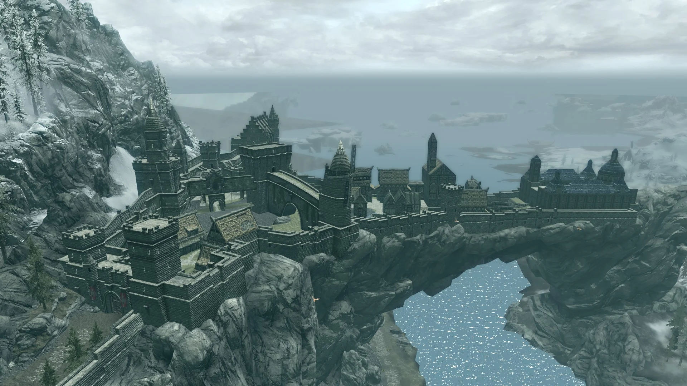 |
| Markarth | Situada no centro-oeste | Uma cidade no centro-oeste de Skyrim, a capital da região Reach (The Reach). Notável por possuir o Colégio Imperial da Voz (Imperial College of the Voice), que foi fundado por Tiber Septim para restaurar a Voz (The Voice) à arte da guerra. Metade da cidade é controlada pela rica família conhecida como os Silver-Bloods (Sangues de Prata), e a violência é feroz na maior parte da cidade por causa dos Perjúrios (Forsworn). | 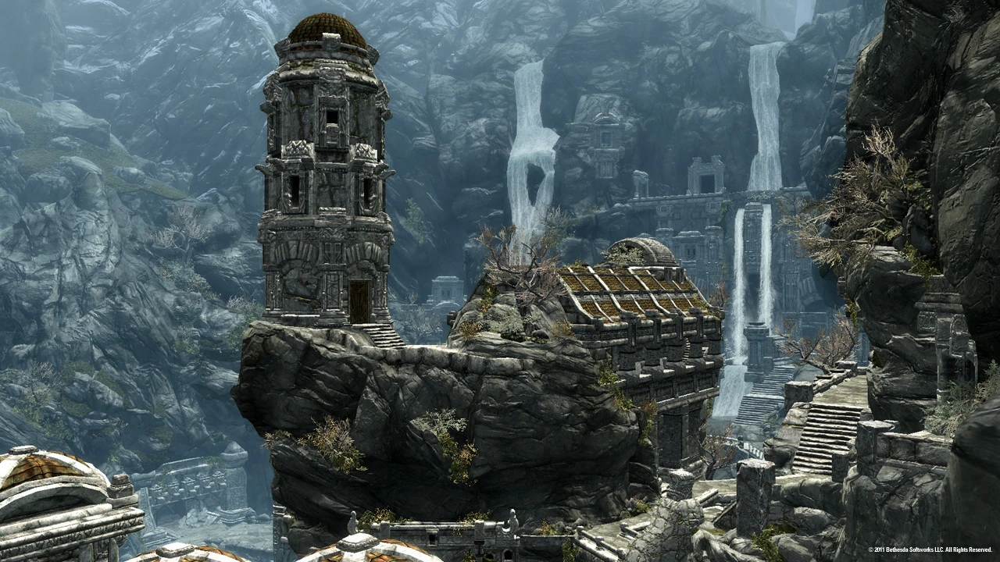 |
| Riften | Localizada no sudeste de Skyrim | Riften é uma cidade marcada pela presença da Guilda dos Ladrões. Possui canais sinuosos, o Salão dos Cidadãos e o Orfanato de Aretino. Considerada a pior cidade do jogo | 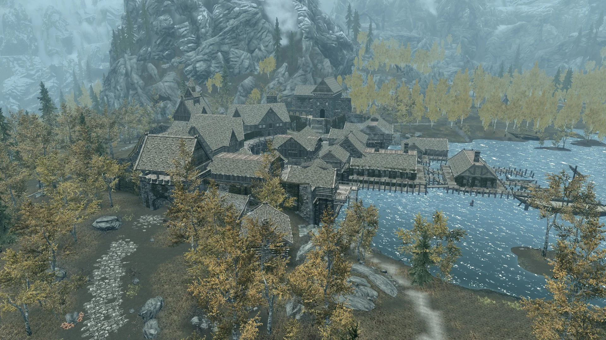 |
| Windhelm | Localizada no sudeste de Skyrim | Antes sendo capital do Primeiro Império (First Empire), atualmente é capital da região Eastmarch. O palácio da dinastia de Ysgramor ainda domina o centro da Cidade Antiga. Windhelm foi saqueada durante a Guerra de Sucessão, e novamente pelo exército Akaviri, de Ada'Soon Dir-Kamal; o Palácio dos Reis (Palace of the Kings) é uma das poucas construções do Primeiro Império que restaram. Hoje, Windhelm permanece sozinha como uma considerável cidade, em contraste com a presença rural majoritaria na região de Eastmarch (Hold of Eastmarch), e serve de base para tropas imperias que quardam a Passagem Dunmeth (Dunmeth Pass) para Morrowind. | 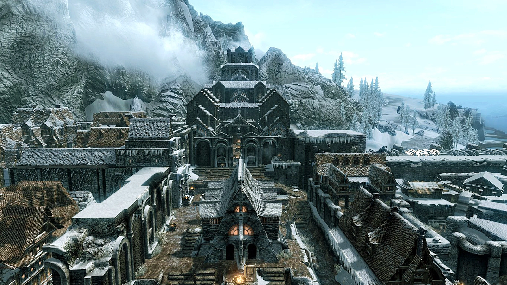 |
| Dawnstar | Localizada na costa norte de Skyrim | Antes sendo capital do Primeiro Império (First Empire), atualmente é capital da região Eastmarch. O palácio da dinastia de Ysgramor ainda domina o centro da Cidade Antiga. Windhelm foi saqueada durante a Guerra de Sucessão, e novamente pelo exército Akaviri, de Ada'Soon Dir-Kamal; o Palácio dos Reis (Palace of the Kings) é uma das poucas construções do Primeiro Império que restaram. Hoje, Windhelm permanece sozinha como uma considerável cidade, em contraste com a presença rural majoritaria na região de Eastmarch (Hold of Eastmarch), e serve de base para tropas imperias que quardam a Passagem Dunmeth (Dunmeth Pass) para Morrowind. | 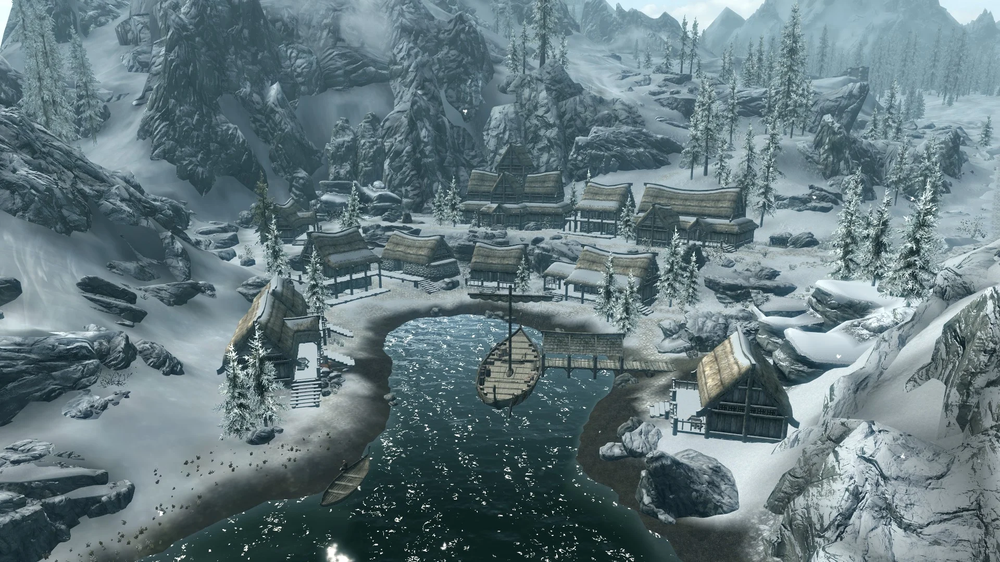 |
| Winterhold | É uma cidade decadente no extremo norte de Skyrim | famosa pelo Colégio de Winterhold e pelas ruínas que outrora formavam uma cidade próspera. | 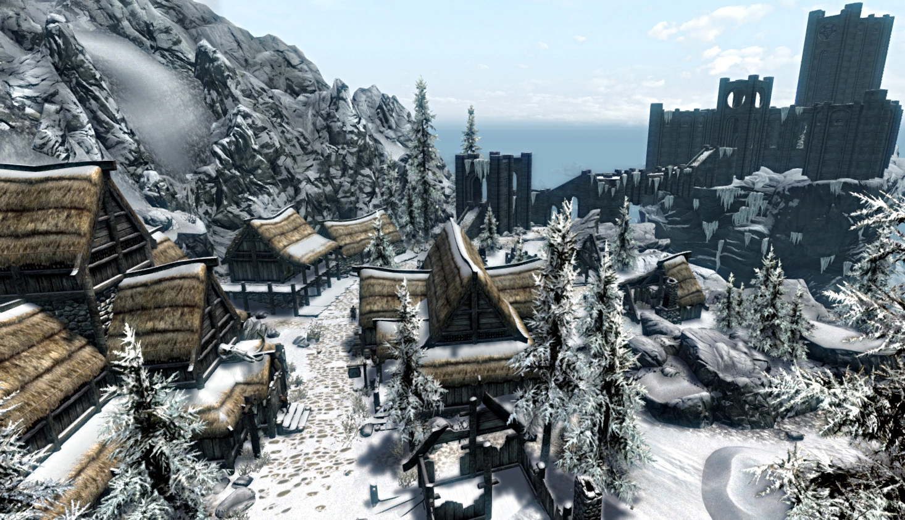 |
| Falkreath | Localizada a sudoeste de Skyrim | Uma cidade a sudoeste de Skyrim, capital da Região de Falkreath. Próxima a fronteira tanto com Cyrodiil como Hammerfell. Tão somente atravessando a fronteira com Hammerfell, se encontra a cidade de Elinhir. Falkreath é conhecida por seu cemitério, que domina a parte sul da cidade. | 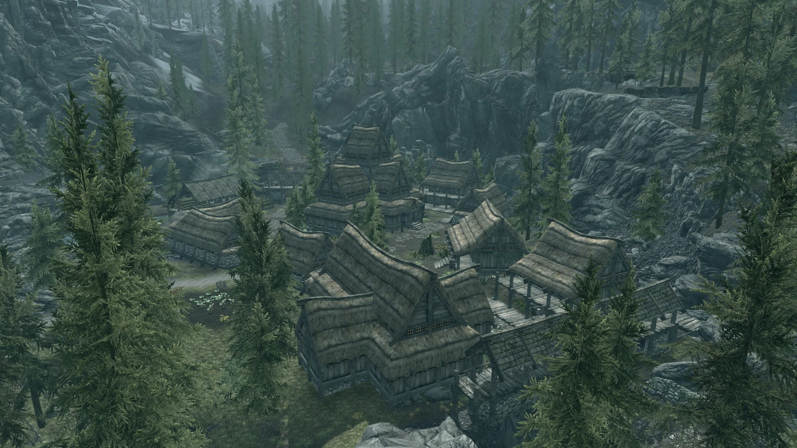 |
| Morthal | Localizada no centro-oeste de Skyrim | Uma cidade no centro-oeste de Skyrim, capital da região Hjaalmarch, próxima tanto à Ponte do Dragão (Dragon Bridge), como de Solitude. O mago, Falion, que pode curar Vampirismo (Vampirism) está localizado lá. O Jarl atual de Morthal é Jarl Idgrod Ravencrone. | 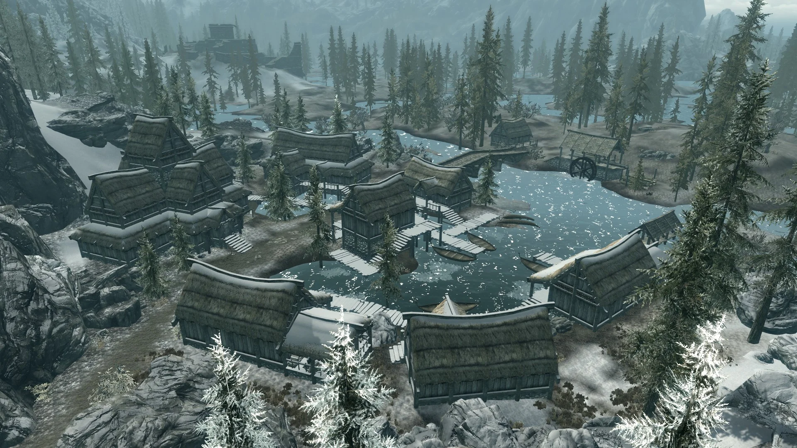 |
| The Throat of the World | Localizada no centro de Skyrim | Uma montanha imponente no centro de Skyrim, é o lar do Templo dos Greybeards e é considerada sagrada pelos estudiosos da Voz. | 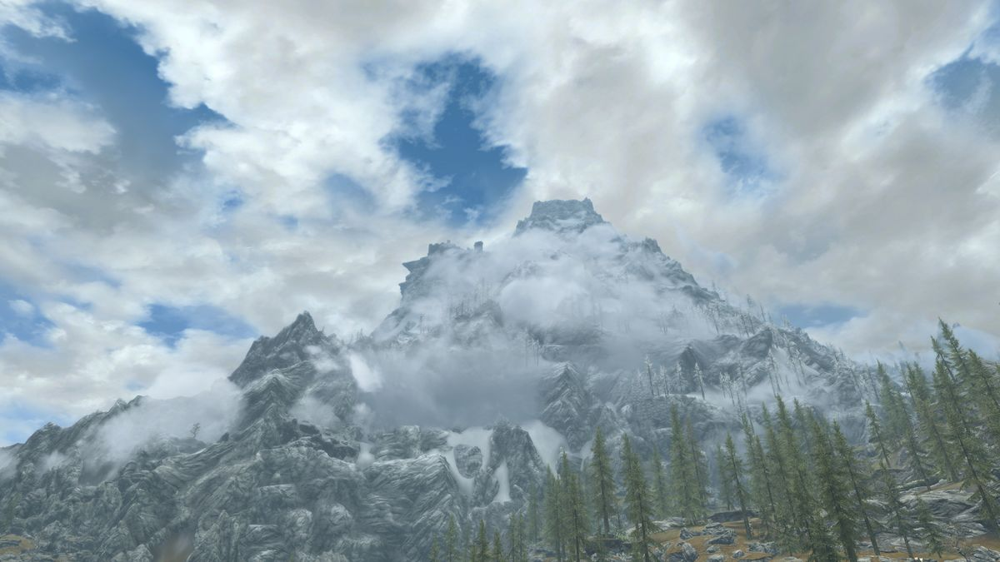 |
| Blackreach | Pode ser encontrada ao sul de Dawnstar | Uma vasta rede de cavernas subterrâneas situada abaixo de Skyrim, conhecida por sua beleza mística e pela presença de Dwemer. |  |
| Sovngarde | So pode ser encontrada no fim das missões principais | Um reino celestial nórdico para onde os heróis caídos vão após a morte. É um lugar glorioso e grandioso, lar dos lendários heróis de Skyrim. | 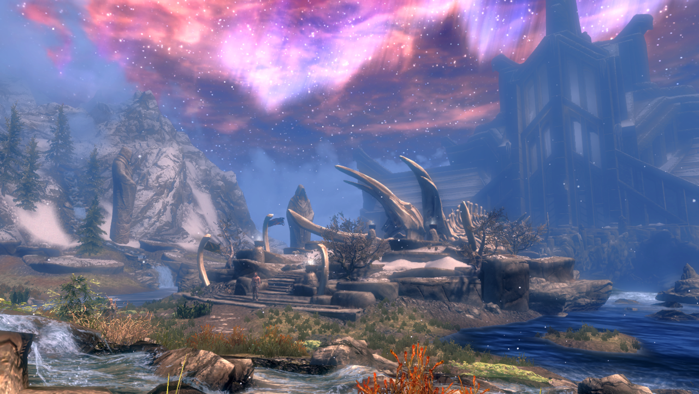 |